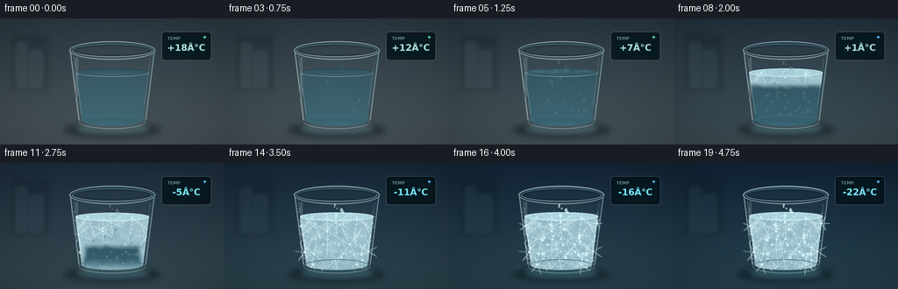
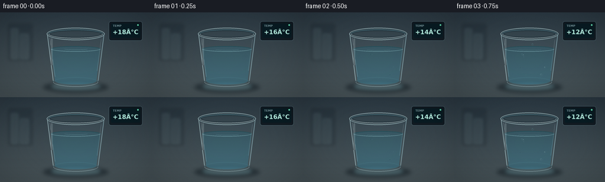

CODING AGENTS AS PIXEL WORLD MODELS
traex/GPT-5.6-Sol · phygen_091
点击播放 · 原生 RGB 像素
逐轮保存的候选
回放视频、检查图与代码变化。
每份候选均可单独播放。实际图片检查记录在下方工具轨迹中。
候选 01播放与检查图
点击播放 · 原生 RGB 像素


展开代码变化
--- 上一保存版本
+++ 本次保存版本
@@ -0,0 +1,383 @@
+from pathlib import Path
+import math
+import numpy as np
+from PIL import Image, ImageDraw, ImageFont, ImageFilter
+import artifact_io
+
+# Procedural, deterministic timelapse of water freezing in a glass.
+W, H, N, SS = 256, 144, 20, 4
+WW, HH = W * SS, H * SS
+rng = np.random.default_rng(91091)
+
+
+def S(v):
+ return int(round(v * SS))
+
+
+def smoothstep(a, b, x):
+ if b == a:
+ return float(x >= b)
+ x = np.clip((x - a) / (b - a), 0.0, 1.0)
+ return x * x * (3.0 - 2.0 * x)
+
+
+def font(size, bold=False):
+ name = "DejaVuSans-Bold.ttf" if bold else "DejaVuSans.ttf"
+ path = f"/usr/share/fonts/truetype/dejavu/{name}"
+ return ImageFont.truetype(path, S(size))
+
+# Fixed fine texture and freezing irregularity.
+small = Image.fromarray(rng.integers(0, 256, (36, 64), dtype=np.uint8)).resize(
+ (WW, HH), Image.Resampling.BICUBIC
+).filter(ImageFilter.GaussianBlur(S(2.0)))
+coarse_noise = np.asarray(small, dtype=np.float32) / 255.0
+fine_noise = rng.random((HH, WW), dtype=np.float32)
+
+# Condensation positions (x, y, radius, onset).
+drops = []
+for _ in range(35):
+ y = rng.uniform(46, 109)
+ center = 128 + (y - 38) * rng.uniform(-0.48, 0.48)
+ maxhalf = 43 - (y - 40) * 0.11
+ x = np.clip(center, 128 - maxhalf, 128 + maxhalf)
+ drops.append((x, y, rng.uniform(0.65, 1.65), rng.uniform(0.03, 0.35)))
+
+# Crystals inside the water: location, radius, reveal time, arm rotation.
+crystals = [
+ (100, 62, 24, .29, .18), (151, 63, 23, .31, .66),
+ (89, 82, 21, .40, .35), (167, 84, 20, .43, .08),
+ (117, 78, 28, .47, .53), (143, 93, 25, .54, .10),
+ (102, 104, 22, .58, .74), (126, 111, 25, .62, .32),
+ (157, 111, 20, .66, .59), (127, 68, 16, .37, .45),
+]
+# Exterior frost stars along lower glass and side walls.
+ext_crystals = [
+ (91, 102, 12, .52, .1), (164, 101, 12, .56, .55),
+ (101, 116, 11, .63, .2), (151, 116, 12, .66, .65),
+ (87, 72, 9, .66, .4), (169, 69, 9, .71, .0),
+]
+
+
+def body_mask_image():
+ m = Image.new("L", (WW, HH), 0)
+ d = ImageDraw.Draw(m)
+ d.polygon([(S(80), S(36)), (S(176), S(36)), (S(166), S(117)),
+ (S(158), S(123)), (S(98), S(123)), (S(90), S(117))], fill=255)
+ d.ellipse((S(90), S(111), S(166), S(126)), fill=255)
+ return m
+
+BODY_MASK = body_mask_image()
+
+
+def water_geometry(level):
+ # Glass tapers slightly toward its base.
+ frac = (level - 36) / 84
+ xl = 84 + 7 * frac
+ xr = 172 - 7 * frac
+ mask = Image.new("L", (WW, HH), 0)
+ d = ImageDraw.Draw(mask)
+ d.polygon([(S(xl), S(level)), (S(xr), S(level)), (S(163), S(116)),
+ (S(157), S(120)), (S(99), S(120)), (S(93), S(116))], fill=255)
+ d.ellipse((S(xl), S(level - 4.3), S(xr), S(level + 5.0)), fill=255)
+ d.ellipse((S(93), S(111), S(163), S(122)), fill=255)
+ return mask, xl, xr
+
+
+def composite_color(base, color, mask, opacity=1.0):
+ layer = Image.new("RGBA", base.size, color)
+ if mask is not None:
+ if opacity != 1.0:
+ a = np.asarray(mask, dtype=np.float32) * opacity
+ mask = Image.fromarray(np.uint8(np.clip(a, 0, 255)))
+ layer.putalpha(mask)
+ return Image.alpha_composite(base, layer)
+
+
+def draw_crystal_mask(cx, cy, radius, q, rot, width=0.65):
+ """Six-armed ice crystal, grown continuously from center outward."""
+ m = Image.new("L", (WW, HH), 0)
+ if q <= 0:
+ return m
+ d = ImageDraw.Draw(m)
+ reach = radius * smoothstep(0, .72, q)
+ alpha = int(210 * smoothstep(0, .25, q))
+ for arm in range(6):
+ ang = rot + arm * math.pi / 3
+ ux, uy = math.cos(ang), math.sin(ang)
+ ex, ey = cx + ux * reach, cy + uy * reach
+ d.line((S(cx), S(cy), S(ex), S(ey)), fill=alpha, width=max(1, S(width)))
+ # Paired barbs produce characteristic dendritic growth.
+ for frac in (.37, .59, .78):
+ if reach < radius * frac:
+ continue
+ bx, by = cx + ux * reach * frac, cy + uy * reach * frac
+ twig = radius * (0.19 - .07 * frac) * min(1, q * 1.7)
+ for sign in (-1, 1):
+ ta = ang + sign * math.pi * .29
+ tx, ty = bx - math.cos(ta) * twig, by - math.sin(ta) * twig
+ d.line((S(bx), S(by), S(tx), S(ty)), fill=int(alpha * .78),
+ width=max(1, S(width * .72)))
+ d.ellipse((S(cx-1), S(cy-1), S(cx+1), S(cy+1)), fill=min(255, alpha+25))
+ return m.filter(ImageFilter.GaussianBlur(S(.12)))
+
+
+def add_cold_wisps(im, p, frame):
+ amount = smoothstep(.58, .92, p)
+ if amount <= 0:
+ return im
+ lay = Image.new("RGBA", im.size, (0, 0, 0, 0))
+ d = ImageDraw.Draw(lay)
+ # Low, translucent curls of freezer mist; motion is slow and coherent.
+ for k in range(3):
+ phase = frame * .17 + k * 1.9
+ pts = []
+ for j in range(24):
+ x = 73 + j * 5.0 + 3 * math.sin(phase + j * .35 + k)
+ y = 121 - k * 3.2 - 3.0 * math.sin(phase * .7 + j * .42)
+ pts.append((S(x), S(y)))
+ d.line(pts, fill=(190, 229, 240, int(34 * amount)), width=S(1.2))
+ lay = lay.filter(ImageFilter.GaussianBlur(S(1.25)))
+ return Image.alpha_composite(im, lay)
+
+
+def render_frame(i):
+ p = i / (N - 1)
+ cold = smoothstep(.05, 1.0, p)
+ temp = int(round(18 + (-40 * p)))
+
+ # Background changes from neutral steel-blue to the deep blue of a freezer.
+ yy = np.arange(HH, dtype=np.float32)[:, None] / HH
+ warm_top = np.array([42, 55, 64], np.float32)
+ warm_bot = np.array([73, 84, 88], np.float32)
+ cold_top = np.array([17, 35, 52], np.float32)
+ cold_bot = np.array([39, 65, 76], np.float32)
+ top = warm_top * (1-cold) + cold_top * cold
+ bot = warm_bot * (1-cold) + cold_bot * cold
+ grad = top[None, None, :] * (1-yy[:, :, None]) + bot[None, None, :] * yy[:, :, None]
+ bg = np.repeat(grad, WW, axis=1)
+ # Fine photographic grain, consistent but with slight temporal sensor variation.
+ frame_rng = np.random.default_rng(7100 + i)
+ grain = frame_rng.normal(0, 1.15, (HH, WW, 1))
+ bg = np.clip(bg + grain, 0, 255).astype(np.uint8)
+ im = Image.fromarray(bg, "RGB").convert("RGBA")
+
+ # Out-of-focus tiled freezer/lab background and shelf silhouettes.
+ back = Image.new("RGBA", im.size, (0, 0, 0, 0))
+ bd = ImageDraw.Draw(back)
+ for x in (31, 95, 159, 223):
+ bd.line((S(x), 0, S(x), S(109)), fill=(135, 163, 169, 18), width=S(.45))
+ bd.line((0, S(73), WW, S(73)), fill=(131, 157, 164, 17), width=S(.5))
+ bd.rounded_rectangle((S(14), S(19), S(55), S(82)), radius=S(3), fill=(7, 18, 27, 48))
+ bd.rectangle((S(19), S(28), S(30), S(79)), fill=(126, 160, 164, 14))
+ bd.rectangle((S(34), S(37), S(48), S(79)), fill=(115, 150, 156, 12))
+ back = back.filter(ImageFilter.GaussianBlur(S(2.5)))
+ im = Image.alpha_composite(im, back)
+
+ # Countertop, seam, and glass shadow/caustic.
+ counter = Image.new("RGBA", im.size, (0, 0, 0, 0))
+ cd = ImageDraw.Draw(counter)
+ cd.rectangle((0, S(109), WW, HH), fill=(32, 48, 53, 255))
+ for y in range(S(109), HH):
+ a = int(25 * (y-S(109)) / max(1, HH-S(109)))
+ cd.line((0, y, WW, y), fill=(9, 18, 24, a))
+ cd.line((0, S(109), WW, S(109)), fill=(118, 148, 151, 48), width=S(.7))
+ cd.ellipse((S(72), S(117), S(184), S(137)), fill=(2, 11, 17, 112))
+ cd.ellipse((S(88), S(120), S(169), S(130)), fill=(100, 181, 195, int(18+18*cold)))
+ counter = counter.filter(ImageFilter.GaussianBlur(S(3.2)))
+ im = Image.alpha_composite(im, counter)
+
+ # Digital temperature monitor: an immediate, legible cue to the falling temperature.
+ panel = Image.new("RGBA", im.size, (0, 0, 0, 0))
+ pd = ImageDraw.Draw(panel)
+ pd.rounded_rectangle((S(184), S(15), S(241), S(48)), radius=S(4), fill=(4, 12, 19, 185),
+ outline=(113, 151, 161, 80), width=S(.7))
+ pd.rounded_rectangle((S(188), S(19), S(237), S(43)), radius=S(2), fill=(4, 23, 30, 230))
+ pd.text((S(191), S(20)), "TEMP", font=font(4.8, True), fill=(129, 162, 168, 205))
+ tcolor = (124, 238, 255, 245) if temp <= 0 else (180, 235, 220, 245)
+ ttext = f"{temp:+d}°C"
+ tf = font(10.2, True)
+ # Center number in display.
+ box = pd.textbbox((0, 0), ttext, font=tf)
+ tw = box[2] - box[0]
+ pd.text((S(212.5)-tw/2, S(27.3)), ttext, font=tf, fill=tcolor,
+ stroke_width=max(1, S(.15)), stroke_fill=(20, 64, 72, 180))
+ # tiny indicator LED shifts from green to blue
+ led = (100, 222, 174, 230) if temp > 1 else (97, 185, 255, 245)
+ pd.ellipse((S(232), S(20), S(234.7), S(22.7)), fill=led)
+ im = Image.alpha_composite(im, panel)
+
+ # Back glass wall: transparent blue-gray volume and refraction bands.
+ glassback = Image.new("RGBA", im.size, (0, 0, 0, 0))
+ gd = ImageDraw.Draw(glassback)
+ gd.polygon([(S(80), S(37)), (S(176), S(37)), (S(166), S(117)),
+ (S(158), S(123)), (S(98), S(123)), (S(90), S(117))],
+ fill=(155, 210, 220, 13))
+ gd.ellipse((S(79), S(26), S(177), S(47)), fill=(99, 150, 160, 20))
+ gd.ellipse((S(84), S(30), S(172), S(43)), fill=(18, 40, 49, 65))
+ gd.ellipse((S(86), S(32), S(170), S(41)), fill=(81, 117, 124, 18))
+ im = Image.alpha_composite(im, glassback)
+
+ # Liquid level rises imperceptibly upon freezing (expansion), while early ripples settle.
+ level = 61.5 - 1.0 * smoothstep(.38, .95, p)
+ water_mask, xl, xr = water_geometry(level)
+ wm = np.asarray(water_mask, dtype=np.float32) / 255.0
+ # Clear liquid body with a vertical cyan absorption gradient.
+ arr = np.zeros((HH, WW, 4), dtype=np.uint8)
+ water_y = np.arange(HH)[:, None] / SS
+ depth = np.clip((water_y - level) / (121-level), 0, 1)
+ arr[:, :, 0] = np.uint8(38 + 12 * depth)
+ arr[:, :, 1] = np.uint8(107 + 20 * depth)
+ arr[:, :, 2] = np.uint8(127 + 27 * depth)
+ arr[:, :, 3] = np.uint8(wm * (75 + 25 * depth))
+ im = Image.alpha_composite(im, Image.fromarray(arr, "RGBA"))
+
+ # Rear/front meniscus and the last liquid ripple.
+ surf = Image.new("RGBA", im.size, (0, 0, 0, 0))
+ sd = ImageDraw.Draw(surf)
+ ripple = math.sin(i * .9) * (1-smoothstep(.12, .38, p))
+ sd.arc((S(xl), S(level-4.3+ripple*.18), S(xr), S(level+4.8+ripple*.18)), 180, 360,
+ fill=(24, 69, 78, 175), width=S(1.0))
+ sd.arc((S(xl), S(level-4.2), S(xr), S(level+5.1)), 0, 180,
+ fill=(172, 224, 229, 115), width=S(.75))
+ if p < .36:
+ sd.arc((S(109), S(level-1+ripple), S(148), S(level+2+ripple)), 5, 175,
+ fill=(164, 219, 225, int(70*(1-p/.36))), width=S(.45))
+ im = Image.alpha_composite(im, surf)
+
+ # Physically motivated freezing field: surface first, then walls/bottom, finally center.
+ X = np.arange(WW, dtype=np.float32)[None, :] / SS
+ Y = np.arange(HH, dtype=np.float32)[:, None] / SS
+ yn = np.clip((Y-level)/(120-level), 0, 1)
+ left_b = xl + (93-xl)*yn
+ right_b = xr + (163-xr)*yn
+ sidefrac = np.minimum(X-left_b, right_b-X) / np.maximum(1, (right_b-left_b)/2)
+ sidefrac = np.clip(sidefrac, 0, 1)
+ t_surface = .25 + .50*yn + .035*(coarse_noise-.5)
+ t_side = .39 + .36*sidefrac + .13*yn + .025*(fine_noise-.5)
+ t_bottom = .53 + .24*(1-yn) + .02*(coarse_noise-.5)
+ freeze_time = np.minimum(np.minimum(t_surface, t_side), t_bottom)
+ activation = np.clip((p-freeze_time)/.075, 0, 1)
+ activation = activation*activation*(3-2*activation) * wm
+ ice = np.zeros((HH, WW, 4), dtype=np.uint8)
+ crystalline = .55 + .45*coarse_noise
+ ice[:, :, 0] = np.uint8(np.clip(161 + 58*crystalline, 0, 255))
+ ice[:, :, 1] = np.uint8(np.clip(202 + 45*crystalline, 0, 255))
+ ice[:, :, 2] = np.uint8(np.clip(217 + 36*crystalline, 0, 255))
+ ice[:, :, 3] = np.uint8(np.clip(activation*(112 + 70*crystalline), 0, 220))
+ im = Image.alpha_composite(im, Image.fromarray(ice, "RGBA"))
+
+ # Dendritic crystal lattice, clipped to the contents of the glass.
+ dendrites = Image.new("L", (WW, HH), 0)
+ for cx, cy, rad, start, rot in crystals:
+ q = (p-start)/.34
+ cm = draw_crystal_mask(cx, cy, rad, q, rot, .55)
+ dendrites = Image.fromarray(np.maximum(np.asarray(dendrites), np.asarray(cm)).astype(np.uint8))
+ den = np.minimum(np.asarray(dendrites), np.asarray(water_mask)).astype(np.uint8)
+ den_layer = Image.new("RGBA", im.size, (220, 247, 251, 0))
+ den_layer.putalpha(Image.fromarray(den))
+ im = Image.alpha_composite(im, den_layer)
+
+ # The top turns from a reflective liquid meniscus into an opaque ice disk.
+ topfreeze = smoothstep(.24, .48, p)
+ if topfreeze > 0:
+ top = Image.new("RGBA", im.size, (0, 0, 0, 0))
+ td = ImageDraw.Draw(top)
+ td.ellipse((S(xl), S(level-4.4), S(xr), S(level+5.0)),
+ fill=(180, 224, 234, int(126*topfreeze)),
+ outline=(221, 247, 248, int(185*topfreeze)), width=S(.75))
+ # Fine cracks in the frozen disk emerge after it stiffens.
+ crack = smoothstep(.45, .68, p)
+ if crack:
+ for ang, ln in ((.22,24), (2.4,19), (4.05,22), (5.3,15), (3.0,12)):
+ x0, y0 = 128, level+.3
+ pts = [(S(x0), S(y0))]
+ for j in range(1,4):
+ r = ln*j/3
+ pts.append((S(x0+math.cos(ang)*r+math.sin(j*2.1+ang)*1.2),
+ S(y0+math.sin(ang)*r*.18+math.cos(j+ang)*.35)))
+ td.line(pts, fill=(231, 251, 251, int(100*crack)), width=S(.45))
+ im = Image.alpha_composite(im, top)
+
+ # Condensation beads first remain transparent, then lock into white frozen droplets.
+ beadlay = Image.new("RGBA", im.size, (0, 0, 0, 0))
+ dd = ImageDraw.Draw(beadlay)
+ for j, (x, y0, r, onset) in enumerate(drops):
+ vis = smoothstep(onset, onset+.13, p)
+ if vis <= 0: continue
+ slide = min(2.8, max(0, p-onset)*7.5) * (1-smoothstep(.42, .66, p))
+ y = y0 + slide
+ frozen = smoothstep(.48 + (j%5)*.035, .77 + (j%5)*.02, p)
+ fill = tuple(int((1-frozen)*a+frozen*b) for a,b in zip((38,78,88,75),(208,239,245,180)))
+ rr = r*(1+.12*frozen)
+ dd.ellipse((S(x-rr), S(y-rr*1.25), S(x+rr), S(y+rr*1.25)), fill=fill,
+ outline=(213, 244, 247, int((80+100*frozen)*vis)), width=max(1,S(.28)))
+ dd.ellipse((S(x-rr*.42), S(y-rr*.72), S(x-rr*.05), S(y-rr*.25)),
+ fill=(242,255,255,int((135+80*frozen)*vis)))
+ # Clip all beads to body.
+ bead_alpha = np.minimum(np.asarray(beadlay.getchannel("A")), np.asarray(BODY_MASK)).astype(np.uint8)
+ beadlay.putalpha(Image.fromarray(bead_alpha))
+ im = Image.alpha_composite(im, beadlay)
+
+ # Frost bloom along sides and base, including tiny granular rime.
+ frost_amount = smoothstep(.43, .94, p)
+ if frost_amount > 0:
+ frost = Image.new("RGBA", im.size, (0,0,0,0))
+ fd = ImageDraw.Draw(frost)
+ count = int(135*frost_amount)
+ frng = np.random.default_rng(13021)
+ for k in range(count):
+ # Favor sidewalls and base.
+ if k % 3:
+ side = -1 if k % 2 else 1
+ y = frng.uniform(52,119)
+ xb = (85 + .10*(y-36)) if side < 0 else (171 - .10*(y-36))
+ x = xb + side*frng.uniform(-1.0,4.0)
+ else:
+ x = frng.uniform(94,162); y = frng.uniform(113,123)
+ r = frng.uniform(.20,.65)
+ fd.ellipse((S(x-r),S(y-r),S(x+r),S(y+r)), fill=(220,246,250,int(frng.uniform(45,145))))
+ for cx,cy,rad,start,rot in ext_crystals:
+ q=(p-start)/.30
+ cm=draw_crystal_mask(cx,cy,rad,q,rot,.45)
+ col=Image.new("RGBA",im.size,(227,249,251,0)); col.putalpha(cm)
+ frost=Image.alpha_composite(frost,col)
+ # Soft cold fog around rim and lower edge.
+ fd = ImageDraw.Draw(frost)
+ fd.arc((S(80),S(27),S(176),S(46)),180,360,fill=(230,250,251,int(105*frost_amount)),width=S(.7))
+ im=Image.alpha_composite(im,frost)
+
+ # Crisp glass optics over all contents: rim, vertical highlights, thick foot.
+ optics = Image.new("RGBA", im.size, (0,0,0,0))
+ od = ImageDraw.Draw(optics)
+ od.ellipse((S(79),S(26),S(177),S(47)), outline=(204,236,238,150), width=S(1.0))
+ od.arc((S(82),S(29),S(174),S(44)), 2, 178, fill=(238,253,252,142), width=S(.75))
+ od.arc((S(82),S(29),S(174),S(44)), 181, 358, fill=(67,111,123,190), width=S(1.05))
+ od.line((S(80),S(37),S(90),S(116)), fill=(202,236,239,125), width=S(1.15))
+ od.line((S(176),S(37),S(166),S(116)), fill=(180,224,232,112), width=S(1.15))
+ od.line((S(84),S(43),S(93),S(109)), fill=(245,255,254,82), width=S(.55))
+ od.line((S(171),S(46),S(164),S(99)), fill=(236,252,252,58), width=S(.45))
+ od.arc((S(90),S(110),S(166),S(126)), 0, 180, fill=(219,246,247,105), width=S(.8))
+ od.arc((S(90),S(110),S(166),S(126)), 180, 360, fill=(66,109,121,180), width=S(1.1))
+ # Broad studio strip reflected in the left wall.
+ od.rounded_rectangle((S(86),S(44),S(89),S(90)), radius=S(1.4), fill=(239,255,254,38))
+ im = Image.alpha_composite(im, optics)
+ im = add_cold_wisps(im, p, i)
+
+ # Downsample for smooth, photographic edges; modest contrast/color grade.
+ out = im.convert("RGB").resize((W,H), Image.Resampling.LANCZOS)
+ a = np.asarray(out, dtype=np.float32)
+ # subtle vignette focuses on the glass
+ Yf, Xf = np.mgrid[0:H,0:W]
+ vign = 1 - .15*np.clip(((Xf-128)/155)**2 + ((Yf-72)/105)**2,0,1)
+ a *= vign[:,:,None]
+ a = np.clip((a-8)*1.055+8,0,255).astype(np.uint8)
+ return a
+
+
+def main():
+ frames = np.stack([render_frame(i) for i in range(N)], axis=0)
+ artifact_io.save(frames, Path(__file__).resolve().parent)
+
+
+if __name__ == "__main__":
+ main()
可观测工具轨迹
实际执行的命令与返回图片。
命令 1exit 0
/bin/bash -lc "cat prompt.txt && printf '\\n--- GENERATION_RULES ---\\n' && cat GENERATION_RULES.md && printf '\\n--- TASK_SPEC ---\\n' && cat task_spec.json"
命令 2exit 0
/bin/bash -lc "find . -maxdepth 3 -type f -printf '%p\\n' | sort && printf '\\n--- tools ---\\n' && command -v ffmpeg || true; command -v blender || true; command -v python3 || true; python3 - <<'PY' mods=['numpy','PIL','cv2','imageio','moviepy','moderngl','scipy'] for m in mods: try: mod=__import__(m); print(m, getattr(mod,'__version__','ok')) except Exception as e: print(m, 'MISSING') PY"
命令 3exit 0
/bin/bash -lc 'cat artifact_io.py'
命令 4exit 0
/bin/bash -lc "cat > generate.py <<'PY'
from pathlib import Path
import math
import numpy as np
from PIL import Image, ImageDraw, ImageFont, ImageFilter
import artifact_io
# Procedural, deterministic timelapse of water freezing in a glass.
W, H, N, SS = 256, 144, 20, 4
WW, HH = W * SS, H * SS
rng = np.random.default_rng(91091)
def S(v):
return int(round(v * SS))
def smoothstep(a, b, x):
if b == a:
return float(x >= b)
x = np.clip((x - a) / (b - a), 0.0, 1.0)
return x * x * (3.0 - 2.0 * x)
def font(size, bold=False):
name = \"DejaVuSans-Bold.ttf\" if bold else \"DejaVuSans.ttf\"
path = f\"/usr/share/fonts/truetype/dejavu/{name}\"
return ImageFont.truetype(path, S(size))
# Fixed fine texture and freezing irregularity.
small = Image.fromarray(rng.integers(0, 256, (36, 64), dtype=np.uint8)).resize(
(WW, HH), Image.Resampling.BICUBIC
).filter(ImageFilter.GaussianBlur(S(2.0)))
coarse_noise = np.asarray(small, dtype=np.float32) / 255.0
fine_noise = rng.random((HH, WW), dtype=np.float32)
# Condensation positions (x, y, radius, onset).
drops = []
for _ in range(35):
y = rng.uniform(46, 109)
center = 128 + (y - 38) * rng.uniform(-0.48, 0.48)
maxhalf = 43 - (y - 40) * 0.11
x = np.clip(center, 128 - maxhalf, 128 + maxhalf)
drops.append((x, y, rng.uniform(0.65, 1.65), rng.uniform(0.03, 0.35)))
# Crystals inside the water: location, radius, reveal time, arm rotation.
crystals = [
(100, 62, 24, .29, .18), (151, 63, 23, .31, .66),
(89, 82, 21, .40, .35), (167, 84, 20, .43, .08),
(117, 78, 28, .47, .53), (143, 93, 25, .54, .10),
(102, 104, 22, .58, .74), (126, 111, 25, .62, .32),
(157, 111, 20, .66, .59), (127, 68, 16, .37, .45),
]
# Exterior frost stars along lower glass and side walls.
ext_crystals = [
(91, 102, 12, .52, .1), (164, 101, 12, .56, .55),
(101, 116, 11, .63, .2), (151, 116, 12, .66, .65),
(87, 72, 9, .66, .4), (169, 69, 9, .71, .0),
]
def body_mask_image():
m = Image.new(\"L\", (WW, HH), 0)
d = ImageDraw.Draw(m)
d.polygon([(S(80), S(36)), (S(176), S(36)), (S(166), S(117)),
(S(158), S(123)), (S(98), S(123)), (S(90), S(117))], fill=255)
d.ellipse((S(90), S(111), S(166), S(126)), fill=255)
return m
BODY_MASK = body_mask_image()
def water_geometry(level):
# Glass tapers slightly toward its base.
frac = (level - 36) / 84
xl = 84 + 7 * frac
xr = 172 - 7 * frac
mask = Image.new(\"L\", (WW, HH), 0)
d = ImageDraw.Draw(mask)
d.polygon([(S(xl), S(level)), (S(xr), S(level)), (S(163), S(116)),
(S(157), S(120)), (S(99), S(120)), (S(93), S(116))], fill=255)
d.ellipse((S(xl), S(level - 4.3), S(xr), S(level + 5.0)), fill=255)
d.ellipse((S(93), S(111), S(163), S(122)), fill=255)
return mask, xl, xr
def composite_color(base, color, mask, opacity=1.0):
layer = Image.new(\"RGBA\", base.size, color)
if mask is not None:
if opacity "'!= 1.0:
a = np.asarray(mask, dtype=np.float32) * opacity
mask = Image.fromarray(np.uint8(np.clip(a, 0, 255)))
layer.putalpha(mask)
return Image.alpha_composite(base, layer)
def draw_crystal_mask(cx, cy, radius, q, rot, width=0.65):
"""Six-armed ice crystal, grown continuously from center outward."""
m = Image.new("L", (WW, HH), 0)
if q <= 0:
return m
d = ImageDraw.Draw(m)
reach = radius * smoothstep(0, .72, q)
alpha = int(210 * smoothstep(0, .25, q))
for arm in range(6):
ang = rot + arm * math.pi / 3
ux, uy = math.cos(ang), math.sin(ang)
ex, ey = cx + ux * reach, cy + uy * reach
d.line((S(cx), S(cy), S(ex), S(ey)), fill=alpha, width=max(1, S(width)))
# Paired barbs produce characteristic dendritic growth.
for frac in (.37, .59, .78):
if reach < radius * frac:
continue
bx, by = cx + ux * reach * frac, cy + uy * reach * frac
twig = radius * (0.19 - .07 * frac) * min(1, q * 1.7)
for sign in (-1, 1):
ta = ang + sign * math.pi * .29
tx, ty = bx - math.cos(ta) * twig, by - math.sin(ta) * twig
d.line((S(bx), S(by), S(tx), S(ty)), fill=int(alpha * .78),
width=max(1, S(width * .72)))
d.ellipse((S(cx-1), S(cy-1), S(cx+1), S(cy+1)), fill=min(255, alpha+25))
return m.filter(ImageFilter.GaussianBlur(S(.12)))
def add_cold_wisps(im, p, frame):
amount = smoothstep(.58, .92, p)
if amount <= 0:
return im
lay = Image.new("RGBA", im.size, (0, 0, 0, 0))
d = ImageDraw.Draw(lay)
# Low, translucent curls of freezer mist; motion is slow and coherent.
for k in range(3):
phase = frame * .17 + k * 1.9
pts = []
for j in range(24):
x = 73 + j * 5.0 + 3 * math.sin(phase + j * .35 + k)
y = 121 - k * 3.2 - 3.0 * math.sin(phase * .7 + j * .42)
pts.append((S(x), S(y)))
d.line(pts, fill=(190, 229, 240, int(34 * amount)), width=S(1.2))
lay = lay.filter(ImageFilter.GaussianBlur(S(1.25)))
return Image.alpha_composite(im, lay)
def render_frame(i):
p = i / (N - 1)
cold = smoothstep(.05, 1.0, p)
temp = int(round(18 + (-40 * p)))
# Background changes from neutral steel-blue to the deep blue of a freezer.
yy = np.arange(HH, dtype=np.float32)[:, None] / HH
warm_top = np.array([42, 55, 64], np.float32)
warm_bot = np.array([73, 84, 88], np.float32)
cold_top = np.array([17, 35, 52], np.float32)
cold_bot = np.array([39, 65, 76], np.float32)
top = warm_top * (1-cold) + cold_top * cold
bot = warm_bot * (1-cold) + cold_bot * cold
grad = top[None, None, :] * (1-yy[:, :, None]) + bot[None, None, :] * yy[:, :, None]
bg = np.repeat(grad, WW, axis=1)
# Fine photographic grain, consistent but with slight temporal sensor variation.
frame_rng = np.random.default_rng(7100 + i)
grain = frame_rng.normal(0, 1.15, (HH, WW, 1))
bg = np.clip(bg + grain, 0, 255).astype(np.uint8)
im = Image.fromarray(bg, "RGB").convert("RGBA")
# Out-of-focus tiled freezer/lab background and shelf silhouettes.
back = Image.new("RGBA", im.size, (0, 0, 0, 0))
bd = ImageDraw.Draw(back)
for x in (31, 95, 159, 223):
bd.line((S(x), 0, S(x), S(109)), fill=(135, 163, 169, 18), width=S(.45))
bd.line((0, S(73), WW, S(73)), fill=(131, 157, 164, 17), width=S(.5))
bd.rounded_rectangle((S(14), S(19), S(55), S(82)), radius=S(3), fill=(7, 18, 27, 48))
bd.rectangle((S(19), S(28), S(30), S(79)), fill=(126, 160, 164, 14))
bd.rectangle((S(34), S(37), S(48), S(79)), fill=(115, 150, 156, 12))
back = back.filter(ImageFilter.GaussianBlur(S(2.5)))
im = Image.alpha_composite(im, back)
# Countertop, seam, and glass shadow/caustic.
counter = Image.new("RGBA", im.size, (0, 0, 0, 0))
cd = ImageDraw.Draw(counter)
cd.rectangle((0, S(109), WW, HH), fill=(32, 48, 53, 255))
for y in range(S(109), HH):
a = int(25 * (y-S(109)) / max(1, HH-S(109)))
cd.line((0, y, WW, y), fill=(9, 18, 24, a))
cd.line((0, S(109), WW, S(109)), fill=(118, 148, 151, 48), width=S(.7))
cd.ellipse((S(72), S(117), S(184), S(137)), fill=(2, 11, 17, 112))
cd.ellipse((S(88), S(120), S(169), S(130)), fill=(100, 181, 195, int(18+18*cold)))
counter = counter.filter(ImageFilter.GaussianBlur(S(3.2)))
im = Image.alpha_composite(im, counter)
# Digital temperature monitor: an immediate, legible cue to the falling temperature.
panel = Image.new("RGBA", im.size, (0, 0, 0, 0))
pd = ImageDraw.Draw(panel)
pd.rounded_rectangle((S(184), S(15), S(241), S(48)), radius=S(4), fill=(4, 12, 19, 185),
outline=(113, 151, 161, 80), width=S(.7))
pd.rounded_rectangle((S(188), S(19), S(237), S(43)), radius=S(2), fill=(4, 23, 30, 230))
pd.text((S(191), S(20)), "TEMP", font=font(4.8, True), fill=(129, 162, 168, 205))
tcolor = (124, 238, 255, 245) if temp <= 0 else (180, 235, 220, 245)
ttext = f"{temp:+d}°C"
tf = font(10.2, True)
# Center number in display.
box = pd.textbbox((0, 0), ttext, font=tf)
tw = box[2] - box[0]
pd.text((S(212.5)-tw/2, S(27.3)), ttext, font=tf, fill=tcolor,
stroke_width=max(1, S(.15)), stroke_fill=(20, 64, 72, 180))
# tiny indicator LED shifts from green to blue
led = (100, 222, 174, 230) if temp > 1 else (97, 185, 255, 245)
pd.ellipse((S(232), S(20), S(234.7), S(22.7)), fill=led)
im = Image.alpha_composite(im, panel)
# Back glass wall: transparent blue-gray volume and refraction bands.
glassback = Image.new("RGBA", im.size, (0, 0, 0, 0))
gd = ImageDraw.Draw(glassback)
gd.polygon([(S(80), S(37)), (S(176), S(37)), (S(166), S(117)),
(S(158), S(123)), (S(98), S(123)), (S(90), S(117))],
fill=(155, 210, 220, 13))
gd.ellipse((S(79), S(26), S(177), S(47)), fill=(99, 150, 160, 20))
gd.ellipse((S(84), S(30), S(172), S(43)), fill=(18, 40, 49, 65))
gd.ellipse((S(86), S(32), S(170), S(41)), fill=(81, 117, 124, 18))
im = Image.alpha_composite(im, glassback)
# Liquid level rises imperceptibly upon freezing (expansion), while early ripples settle.
level = 61.5 - 1.0 * smoothstep(.38, .95, p)
water_mask, xl, xr = water_geometry(level)
wm = np.asarray(water_mask, dtype=np.float32) / 255.0
# Clear liquid body with a vertical cyan absorption gradient.
arr = np.zeros((HH, WW, 4), dtype=np.uint8)
water_y = np.arange(HH)[:, None] / SS
depth = np.clip((water_y - level) / (121-level), 0, 1)
arr[:, :, 0] = np.uint8(38 + 12 * depth)
arr[:, :, 1] = np.uint8(107 + 20 * depth)
arr[:, :, 2] = np.uint8(127 + 27 * depth)
arr[:, :, 3] = np.uint8(wm * (75 + 25 * depth))
im = Image.alpha_composite(im, Image.fromarray(arr, "RGBA"))
# Rear/front meniscus and the last liquid ripple.
surf = Image.new("RGBA", im.size, (0, 0, 0, 0))
sd = ImageDraw.Draw(surf)
ripple = math.sin(i * .9) * (1-smoothstep(.12, .38, p))
sd.arc((S(xl), S(level-4.3+ripple*.18), S(xr), S(level+4.8+ripple*.18)), 180, 360,
fill=(24, 69, 78, 175), width=S(1.0))
sd.arc((S(xl), S(level-4.2), S(xr), S(level+5.1)), 0, 180,
fill=(172, 224, 229, 115), width=S(.75))
if p < .36:
sd.arc((S(109), S(level-1+ripple), S(148), S(level+2+ripple)), 5, 175,
fill=(164, 219, 225, int(70*(1-p/.36))), width=S(.45))
im = Image.alpha_composite(im, surf)
# Physically motivated freezing field: surface first, then walls/bottom, finally center.
X = np.arange(WW, dtype=np.float32)[None, :] / SS
Y = np.arange(HH, dtype=np.float32)[:, None] / SS
yn = np.clip((Y-level)/(120-level), 0, 1)
left_b = xl + (93-xl)*yn
right_b = xr + (163-xr)*yn
sidefrac = np.minimum(X-left_b, right_b-X) / np.maximum(1, (right_b-left_b)/2)
sidefrac = np.clip(sidefrac, 0, 1)
t_surface = .25 + .50*yn + .035*(coarse_noise-.5)
t_side = .39 + .36*sidefrac + .13*yn + .025*(fine_noise-.5)
t_bottom = .53 + .24*(1-yn) + .02*(coarse_noise-.5)
freeze_time = np.minimum(np.minimum(t_surface, t_side), t_bottom)
activation = np.clip((p-freeze_time)/.075, 0, 1)
activation = activation*activation*(3-2*activation) * wm
ice = np.zeros((HH, WW, 4), dtype=np.uint8)
crystalline = .55 + .45*coarse_noise
ice[:, :, 0] = np.uint8(np.clip(161 + 58*crystalline, 0, 255))
ice[:, :, 1] = np.uint8(np.clip(202 + 45*crystalline, 0, 255))
ice[:, :, 2] = np.uint8(np.clip(217 + 36*crystalline, 0, 255))
ice[:, :, 3] = np.uint8(np.clip(activation*(112 + 70*crystalline), 0, 220))
im = Image.alpha_composite(im, Image.fromarray(ice, "RGBA"))
# Dendritic crystal lattice, clipped to the contents of the glass.
dendrites = Image.new("L", (WW, HH), 0)
for cx, cy, rad, start, rot in crystals:
q = (p-start)/.34
cm = draw_crystal_mask(cx, cy, rad, q, rot, .55)
dendrites = Image.fromarray(np.maximum(np.asarray(dendrites), np.asarray(cm)).astype(np.uint8))
den = np.minimum(np.asarray(dendrites), np.asarray(water_mask)).astype(np.uint8)
den_layer = Image.new("RGBA", im.size, (220, 247, 251, 0))
den_layer.putalpha(Image.fromarray(den))
im = Image.alpha_composite(im, den_layer)
# The top turns from a reflective liquid meniscus into an opaque ice disk.
topfreeze = smoothstep(.24, .48, p)
if topfreeze > 0:
top = Image.new("RGBA", im.size, (0, 0, 0, 0))
td = ImageDraw.Draw(top)
td.ellipse((S(xl), S(level-4.4), S(xr), S(level+5.0)),
fill=(180, 224, 234, int(126*topfreeze)),
outline=(221, 247, 248, int(185*topfreeze)), width=S(.75))
# Fine cracks in the frozen disk emerge after it stiffens.
crack = smoothstep(.45, .68, p)
if crack:
for ang, ln in ((.22,24), (2.4,19), (4.05,22), (5.3,15), (3.0,12)):
x0, y0 = 128, level+.3
pts = [(S(x0), S(y0))]
for j in range(1,4):
r = ln*j/3
pts.append((S(x0+math.cos(ang)*r+math.sin(j*2.1+ang)*1.2),
S(y0+math.sin(ang)*r*.18+math.cos(j+ang)*.35)))
td.line(pts, fill=(231, 251, 251, int(100*crack)), width=S(.45))
im = Image.alpha_composite(im, top)
# Condensation beads first remain transparent, then lock into white frozen droplets.
beadlay = Image.new("RGBA", im.size, (0, 0, 0, 0))
dd = ImageDraw.Draw(beadlay)
for j, (x, y0, r, onset) in enumerate(drops):
vis = smoothstep(onset, onset+.13, p)
if vis <= 0: continue
slide = min(2.8, max(0, p-onset)*7.5) * (1-smoothstep(.42, .66, p))
y = y0 + slide
frozen = smoothstep(.48 + (j%5)*.035, .77 + (j%5)*.02, p)
fill = tuple(int((1-frozen)*a+frozen*b) for a,b in zip((38,78,88,75),(208,239,245,180)))
rr = r*(1+.12*frozen)
dd.ellipse((S(x-rr), S(y-rr*1.25), S(x+rr), S(y+rr*1.25)), fill=fill,
outline=(213, 244, 247, int((80+100*frozen)*vis)), width=max(1,S(.28)))
dd.ellipse((S(x-rr*.42), S(y-rr*.72), S(x-rr*.05), S(y-rr*.25)),
fill=(242,255,255,int((135+80*frozen)*vis)))
# Clip all beads to body.
bead_alpha = np.minimum(np.asarray(beadlay.getchannel("A")), np.asarray(BODY_MASK)).astype(np.uint8)
beadlay.putalpha(Image.fromarray(bead_alpha))
im = Image.alpha_composite(im, beadlay)
# Frost bloom along sides and base, including tiny granular rime.
frost_amount = smoothstep(.43, .94, p)
if frost_amount > 0:
frost = Image.new("RGBA", im.size, (0,0,0,0))
fd = ImageDraw.Draw(frost)
count = int(135*frost_amount)
frng = np.random.default_rng(13021)
for k in range(count):
# Favor sidewalls and base.
if k % 3:
side = -1 if k % 2 else 1
y = frng.uniform(52,119)
xb = (85 + .10*(y-36)) if side < 0 else (171 - .10*(y-36))
x = xb + side*frng.uniform(-1.0,4.0)
else:
x = frng.uniform(94,162); y = frng.uniform(113,123)
r = frng.uniform(.20,.65)
fd.ellipse((S(x-r),S(y-r),S(x+r),S(y+r)), fill=(220,246,250,int(frng.uniform(45,145))))
for cx,cy,rad,start,rot in ext_crystals:
q=(p-start)/.30
cm=draw_crystal_mask(cx,cy,rad,q,rot,.45)
col=Image.new("RGBA",im.size,(227,249,251,0)); col.putalpha(cm)
frost=Image.alpha_composite(frost,col)
# Soft cold fog around rim and lower edge.
fd = ImageDraw.Draw(frost)
fd.arc((S(80),S(27),S(176),S(46)),180,360,fill=(230,250,251,int(105*frost_amount)),width=S(.7))
im=Image.alpha_composite(im,frost)
# Crisp glass optics over all contents: rim, vertical highlights, thick foot.
optics = Image.new("RGBA", im.size, (0,0,0,0))
od = ImageDraw.Draw(optics)
od.ellipse((S(79),S(26),S(177),S(47)), outline=(204,236,238,150), width=S(1.0))
od.arc((S(82),S(29),S(174),S(44)), 2, 178, fill=(238,253,252,142), width=S(.75))
od.arc((S(82),S(29),S(174),S(44)), 181, 358, fill=(67,111,123,190), width=S(1.05))
od.line((S(80),S(37),S(90),S(116)), fill=(202,236,239,125), width=S(1.15))
od.line((S(176),S(37),S(166),S(116)), fill=(180,224,232,112), width=S(1.15))
od.line((S(84),S(43),S(93),S(109)), fill=(245,255,254,82), width=S(.55))
od.line((S(171),S(46),S(164),S(99)), fill=(236,252,252,58), width=S(.45))
od.arc((S(90),S(110),S(166),S(126)), 0, 180, fill=(219,246,247,105), width=S(.8))
od.arc((S(90),S(110),S(166),S(126)), 180, 360, fill=(66,109,121,180), width=S(1.1))
# Broad studio strip reflected in the left wall.
od.rounded_rectangle((S(86),S(44),S(89),S(90)), radius=S(1.4), fill=(239,255,254,38))
im = Image.alpha_composite(im, optics)
im = add_cold_wisps(im, p, i)
# Downsample for smooth, photographic edges; modest contrast/color grade.
out = im.convert("RGB").resize((W,H), Image.Resampling.LANCZOS)
a = np.asarray(out, dtype=np.float32)
# subtle vignette focuses on the glass
Yf, Xf = np.mgrid[0:H,0:W]
vign = 1 - .15*np.clip(((Xf-128)/155)**2 + ((Yf-72)/105)**2,0,1)
a *= vign[:,:,None]
a = np.clip((a-8)*1.055+8,0,255).astype(np.uint8)
return a
def main():
frames = np.stack([render_frame(i) for i in range(N)], axis=0)
artifact_io.save(frames, Path(__file__).resolve().parent)
if __name__ == "__main__":
main()
PY
python3 generate.py
python3 - <<'"'PY'
import numpy as np
from pathlib import Path
from PIL import Image
p=np.load('pixels.npz')['pixels']
print('packed tensor',p.shape,p.dtype,'unique first/last',len(np.unique(p[:,:,0])),len(np.unique(p[:,:,-1])))
# report frame deltas and rough brightness progression
for i in range(20):
a=np.asarray(Image.open(f'frames/{i:02d}.png'))
d=0 if i==0 else np.mean(np.abs(a.astype(float)-np.asarray(Image.open(f'frames/{i-1:02d}.png')).astype(float)))
print(i, round(float(a.mean()),2), round(float(d),2))
PY"命令 5exit 127
/bin/bash -lc "python3 - <<'PY'
from PIL import Image
import numpy as np
im=np.asarray(Image.open('inspection.png'))
print('inspection',im.shape, im.dtype, im.min(),im.max())
# check all contract files and exact frame shapes/modes
for i in range(20):
q=Image.open(f'frames/{i:02d}.png')
assert q.size==(256,144) and q.mode=='RGB'
print('20/20 RGB frames valid')
PY
ls -lh generate.py pixels.npz inspection.png transition_check.png index.html frames/00.png frames/19.png
file pixels.npz inspection.png index.html"命令 6exit 0
/bin/bash -lc "grep -n 'ttext\\|Ã\\|°' generate.py | cat -v; python3 -m py_compile generate.py artifact_io.py; git status --short 2>/dev/null || true"
命令 7exit 0
/bin/bash -lc "sha256sum pixels.npz frames/00.png frames/19.png > .hash_before
python3 generate.py > .regenerate.log 2>&1
sha256sum pixels.npz frames/00.png frames/19.png > .hash_after
diff -u .hash_before .hash_after && cat .hash_after
python3 - <<'PY'
import numpy as np, json
from PIL import Image
z=np.load('pixels.npz')['pixels']
spec=json.load(open('task_spec.json'))
assert z.shape==(spec['height'],spec['width'],spec['frames']) and z.dtype==np.uint32
imgs=np.stack([np.asarray(Image.open(f'frames/{i:02d}.png')) for i in range(20)])
assert imgs.shape==(20,144,256,3) and imgs.dtype==np.uint8
unpacked=np.stack([(z>>16)&255,(z>>8)&255,z&255],axis=-1).transpose(2,0,1,3).astype(np.uint8)
assert np.array_equal(imgs,unpacked)
assert all(np.mean(np.abs(imgs[i].astype(float)-imgs[i-1].astype(float)))>0.1 for i in range(1,20))
print('validated:',imgs.shape,imgs.dtype,'fps=',spec['fps'],'duration=',spec['frames']/spec['fps'])
PY"命令 8exit 0
/bin/bash -lc "python3 - <<'PY'
from pathlib import Path
for name in ('.hash_before','.hash_after','.regenerate.log'):
p=Path(name)
if p.exists(): p.unlink()
PY
ls -1 | sort"保存候选 1 份；完成命令 8 次；可验证图片返回 0 张。原始 API 响应与完整日志保留在本地。